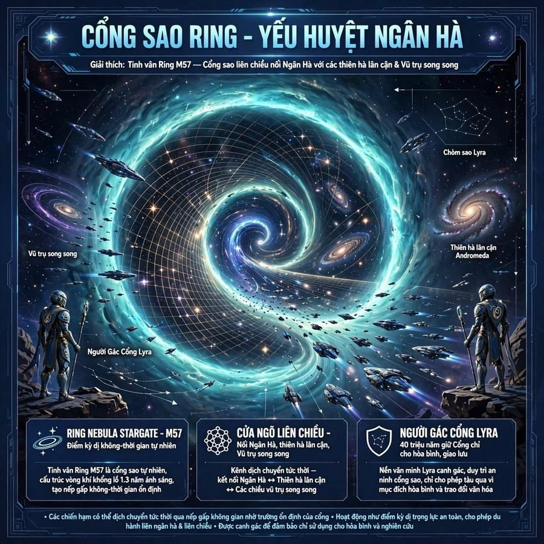
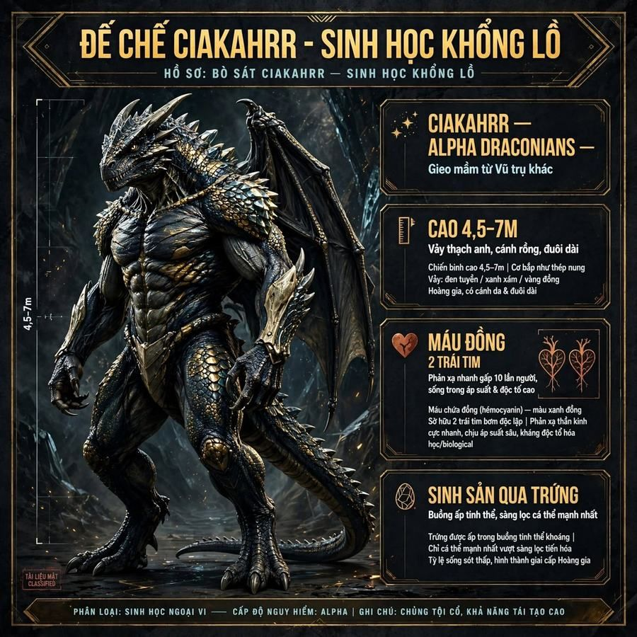
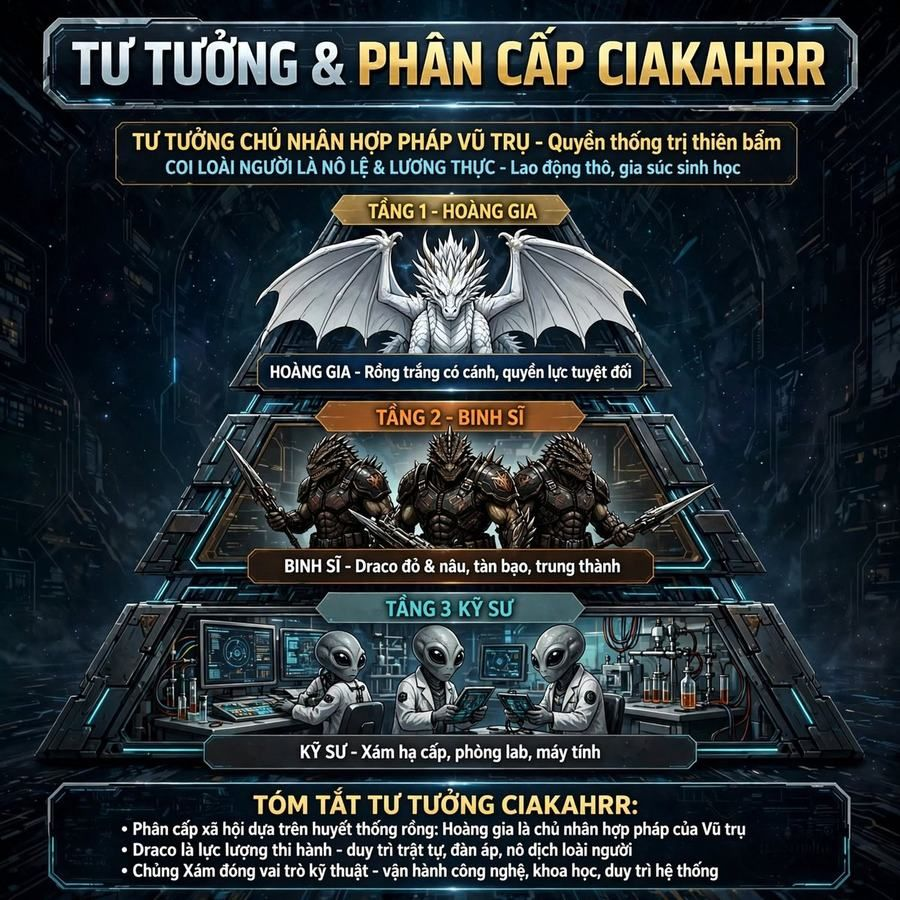
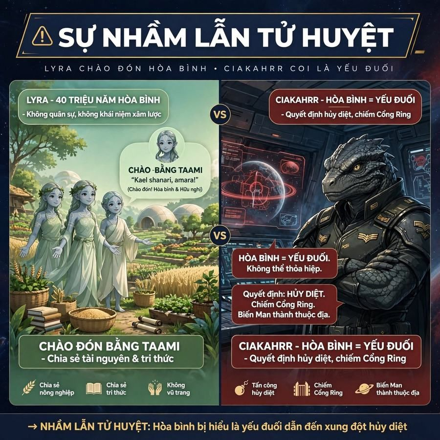
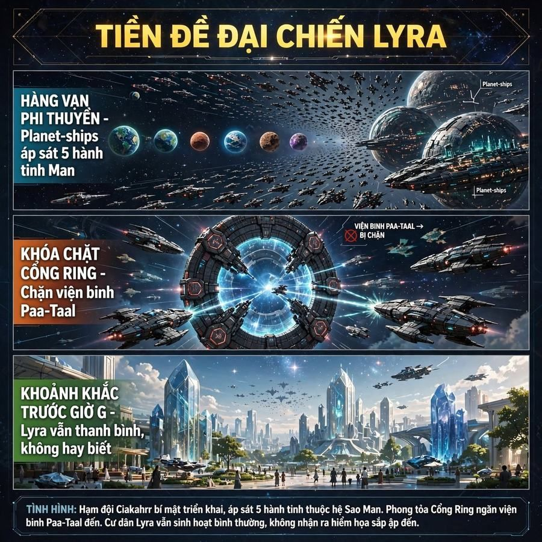
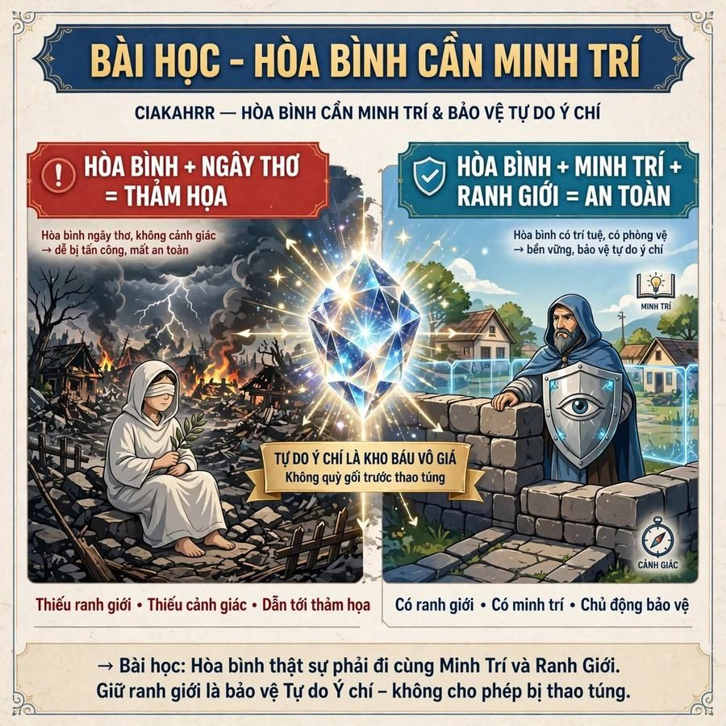

Trang chủ / Chuyên đề 1: Tiền Sử Thiên Hà / Kỳ 8
Chuyên đề 1 · Kỳ 8 / 100
CỔNG SAO TINH VÂN RING & SỰ XUẤT HIỆN CỦA ĐẾ CHẾ BÒ SÁT CIAKAHRR

Ở Kỳ 7, chúng ta đã chứng kiến thảm họa đau xót trên hành tinh Apex — nơi sự lệch pha giữa công nghệ siêu việt và sự đóng băng của Luân xa Tim đã xé rách không-thời gian, đẩy hành tinh này sang hệ sao Zeta Reticuli và biến đổi cư dân Apex thành chủng tộc người Xám (Zeta Reticuli / Greys).
Tuy nhiên, sóng gió đối với nôi tổ tiên Lyra và gia đình hình người (Humanoid) mới chỉ bắt đầu. Trong khi các nền văn minh hình người tại hệ sao Man (Kepler-62) và hệ sao Olmeeka (Vega) đang nỗ lực học bài học cân bằng cực tính, một đám mây đen giông bão khổng lồ đã từ từ áp sát ranh giới của chòm sao Thiên Cầm.
Đó chính là sự xuất hiện của Đế chế Bò sát Ciakahrr (Alpha Draconians / Draco Empire) — thế lực hung hãn, cổ xưa và hùng mạnh bậc nhất Đa Vũ trụ!
Lý do gì khiến phe Ciakahrr dốc toàn bộ hạm đội chinh phạt nhắm thẳng vào chòm sao Lyra? Tầm quan trọng chiến lược sinh tử của Cổng Sao Tinh Vân Ring (Ring Nebula Stargate) đóng vai trò như thế nào trong tham vọng thống trị toàn bộ dải Ngân Hà của họ? Bản chất di truyền, tư tưởng "Chủ nhân hợp pháp duy nhất của Vũ trụ" và tổ chức xã hội của phe Ciakahrr mang những đặc điểm ghê gớm ra sao? Và sự giáp mặt đầu tiên giữa hai triết lý sống hoàn toàn trái ngược đã châm ngòi cho ngọn lửa Cuộc đại chiến Lyra tàn khốc như thế nào?
Hãy cùng dấn thân vào Kỳ 8: Cổng Sao Tinh Vân Ring & Sự Xuất Hiện Của Đế Chế Bò Sát Ciakahrr để mở ra chương sử đen tối và bi hùng nhất của bình minh thiên hà!
✦ ✦ ✦1. BÍ ẨN CỔNG SAO TINH VÂN RING — YẾU HUYỆT KHÔNG - THỜI GIAN CỦA DẢI NGÂN HÀ
Để hiểu tại sao chòm sao Lyra lại trở thành mục tiêu xâm lược hàng đầu của Đế chế Draco, trước hết chúng ta phải giải mã giá trị chiến lược vô giá của Cổng Sao Tinh Vân Ring (Ring Nebula Stargate / M57).
A. Cửa Ngõ Liên Chiều Tự Nhiên Khổng Lồ
- Điểm Kỳ Dị Không-Thời Gian Nối Liền Các Vũ Trụ: Cổng Sao Tinh vân Ring không phải là một công trình nhân tạo do con người hay các chủng tộc xây dựng. Đó là một điểm kỳ dị không-thời gian tự nhiên khổng lồ, nối liền dải Ngân Hà của chúng ta với các thiên hà lân cận và thậm chí đi xuyên qua các Vũ trụ song song khác.
- Tuyến Đường Giao Thương & Di Chuyển Chiến Lược: Bất kỳ hạm đội nào kiểm soát được Cổng Sao Tinh vân Ring đều có khả năng dịch chuyển tức thời hàng triệu chiến hạm xuyên qua các nếp gấp không gian mà không cần tốn hàng ngàn năm du hành đường dài.
B. Vai Trò "Người Gác Cổng" Của Văn Minh Lyra
- Sự Giám Sát Hòa Bình: Trong suốt Kỷ nguyên Vàng 40 triệu năm, cư dân Lyra tại hệ sao Man phối hợp với các Đấng Sáng Lập để bảo vệ và duy trì sự ổn định cho Cổng Sao này. Họ đảm bảo Cổng Sao chỉ được sử dụng cho mục đích giao lưu văn hóa, học hỏi tri thức và di chuyển hòa bình.
- Mục Tiêu Thao Túng Của Các Thế Lực Bành Trướng: Tuy nhiên, đối với một đế chế chinh phạt, việc một liên minh hòa bình không có lực lượng quân sự mạnh mẽ lại nắm giữ "chìa khóa vàng" của Cổng Sao Ring Nebula là một sự ngứa mắt không thể chấp nhận được!

2. NGUỒN GỐC SƠ KHỞI CỦA ĐẾ CHẾ BÒ SÁT CIAKAHRR (ALPHA DRACONIANS)
Chủng tộc Bò sát Ciakahrr (thường được biết đến với tên gọi Alpha Draconians hay Hoàng gia Draco) sở hữu một lịch sử xuất thân vô cùng đặc biệt và đáng sợ.
A. Sự Gieo Mầm Từ Vũ Trụ Khác & Cấu Trúc Di Truyền Bất Mật
- Xuất Thân Từ Vũ Trụ Khác: Theo các hồ sơ giải mật thiên hà, chủng tộc Ciakahrr không được gieo mầm nguyên thủy trong dải Ngân Hà của chúng ta. Họ được tạo ra tại một Vũ trụ khác (mang dải tần số vật lý đậm đặc và nhiều sự phân cực khốc liệt hơn) và đã đi xuyên qua một Cổng Sao cổ xưa để thâm nhập vào dải Ngân Hà từ hàng tỷ năm trước.
- Hình Thái Sinh Học Đồ Sộ & Thích Nghi Tuyệt Đối:
- Vóc Dáng Khổng Lồ: Một chiến binh Ciakahrr thuần chủng cao từ 4,5m đến 7,0m, nặng hàng tấn với khối cơ bắp và khung xương kiên cố như thép nung.
- Lớp Giáp Vảy Thạch Anh & Đôi Cánh Rồng: Làn da của họ là những mảng vảy cứng cáp màu đen tuyền, xanh xám hoặc vàng đồng, có khả năng chống đỡ các đòn tấn công động năng và nhiệt lượng cao. Những sinh mệnh dòng dõi Hoàng gia (Ciakahrr Elite) sở hữu thêm cặp cánh da lớn đằng sau lưng và một chiếc đuôi dài đầy uy lực.
- Máu Chứa Đồng & Hệ Thống Hai Trái Tim: Hệ tuần hoàn của họ dựa trên cơ sở đồng (Copper-based blood), cho phép họ sống sót trong các môi trường áp suất và độc tố cực cao. Họ sở hữu hai trái tim và hệ thống thần kinh phản xạ nhanh gấp mười lần loài người.
B. Sinh Sản Qua Trứng & Trí Tuệ Logic Khô Khốc
- Sinh Sản Thụ Tinh Trên Di Truyền: Phe Ciakahrr sinh sản bằng cách đẻ trứng trong các buồng ấp tinh thể chuyên dụng. Quá trình ấp trứng được kiểm soát chặt chẽ để sàng lọc những cá thể mạnh nhất ngay từ khi chưa chào đời.
- Sự Đóng Băng Hoàn Toàn Của Luân Xa Tim: Khác với bản thiết kế dạng người của Paa-Taal vốn có Luân xa Tim dồi dào tình yêu thương, bộ gen Ciakahrr được thiết kế hoàn toàn loại bỏ Luân xa Tim. Họ vận hành hoàn toàn bằng Trí tuệ Logic lạnh ngắt, Bản năng Sinh tồn hung hãn và Năng lực Thần giao cách cảm thao túng.

3. TƯ TƯỞNG "CHỦ NHÂN HỢP PHÁP VŨ TRỤ" VÀ XÃ HỘI PHÂN CẤP KHỐC LIỆT
Điều khiến Đế chế Ciakahrr trở thành thế lực đáng sợ nhất không chỉ là sức mạnh thể chất hay tàu chiến khổng lồ, mà là Tư tưởng Thượng đẳng Tuyệt đối (Draco Supremacy Ideology) của họ.
A. Dòng Dõi "Chủ Nhân Hợp Pháp" (The Rightful Heirs)
- Quyền Thống Trị Thiên Bẩm: Phe Ciakahrr tin rằng họ là chủng tộc cổ xưa nhất, mạnh mẽ nhất và được "tạo hóa" ban tặng quyền đương nhiên làm chủ toàn bộ dải Ngân Hà.
- Coi Các Chủng Tộc Khác Là Nô Lệ & Lương Thực: Trong thế giới quan của Ciakahrr, các dòng sinh mệnh khác — đặc biệt là gia đình hình người (Humanoid) trẻ tuổi — không phải là những sinh mệnh bình đẳng. Họ xem loài người chỉ là "lực lượng lao động thô", "gia súc sinh học" hoặc "nguồn tài nguyên năng lượng" cần phải bị nô dịch và khai thác!
B. Xã Hội Phân Cấp Đẳng Cấp Tuyệt Đối (Castes System)
Đế chế Ciakahrr vận hành theo một mô hình phân cấp giai cấp vô cùng nghiệt ngã:
- Hoàng Gia Ciakahrr (Royal White & Winged Draco): Những rồng trắng khổng lồ có cánh, sở hữu năng lực tâm thức siêu việt, nắm giữ quyền lực thống trị tuyệt đối và chỉ huy toàn bộ Đế chế.
- Tầng Lớp Binh Sĩ Chiến Đấu (Reptilian Warriors / Red & Brown Draco): Những chiến binh da vảy đen hoặc nâu, nổi tiếng với sự tàn bạo, trung thành tuyệt đối và khả năng chiến đấu không biết sợ hãi.
- Tầng Lớp Kỹ Sư & Nhà Khoa Học (Chủng Xám Hạ Cấp / Lower Greys): Các chủng tộc phụ thuộc hoặc bị nô dịch (như các nhánh người Xám hạ cấp) đóng vai trò điều hành máy tính, phòng thí nghiệm và hỗ trợ kỹ thuật.

4. THÂM NHẬP HỆ SAO MAN VÀ SỰ BẢN CHẤT CỦA SỰ GIAO TIẾP BAN ĐẦU
Khi hạm đội viễn chinh khổng lồ của Đế chế Ciakahrr (với các siêu phi thuyền hình hành tinh - Planet-ships và các pháo hạm từ trường) rà soát đến vùng biên giới chòm sao Lyra, họ đã phát hiện ra sự tồn tại của hệ sao Man (Kepler-62).
A. Sự Ngây Thơ Ban Đầu Của Cư Dân Lyra
- Sống Trong Hòa Bình 40 Triệu Năm: Như chúng ta đã biết ở các kỳ trước, cư dân Lyra (Ahel, Noor, Taal, Laan, Ladrakh) đã sống trong sự bình yên suốt 40 triệu năm. Họ chưa từng biết đến chiến tranh, không xây dựng lực lượng quân sự chuyên nghiệp và không có khái niệm về "kẻ xâm lược tàn bạo".
- Đón Tiếp Bằng Tinh Thần Ngoại Giao Hòa Bình: Khi những phi thuyền trinh sát đầu tiên của Ciakahrr xuất hiện ngoài cự ly, Chính phủ Taal và Hội đồng Lyra đã nỗ lực thiết lập giao tiếp ngoại giao bằng tiếng Taami. Họ mở rộng vòng tay chào đón, đề nghị chia sẻ tài nguyên, công nghệ nông nghiệp và tri thức với những người khách lạ.
B. Sự Nhầm Lẫn Tử Huyệt Của Phe Ciakahrr
- Xem Lời Đề Nghị Hòa Bình Là Sự Yếu Ớt: Phe Ciakahrr với tư duy logic lạnh ngắt không hề thấu hiểu khái niệm "tình yêu thương" hay "sự hòa hợp". Họ coi sự chào đón nồng hậu và thái độ không vũ trang của người Lyra là minh chứng cho sự yếu đuối, ngây thơ và dễ bị đè bẹp!
- Quyết Định Hủy Diệt Đột Ngột: Thay vì thương lượng hay chấp nhận lời đề nghị hòa bình, Bộ Chỉ Huy Hoàng Gia Ciakahrr nhận thấy cơ hội ngàn năm có một: Đánh chiếm trọn vẹn Cổng Sao Tinh vân Ring, biến hệ sao Man thành thuộc địa và tiêu diệt hoặc nô dịch toàn bộ cư dân Lyra trước khi họ kịp nhận ra điều gì đang xảy ra!

5. TIỀN ĐỀ CHÂM NGÒI CHO CUỘC ĐẠI CHIẾN LYRA (THE LYRAN WARS)
Sự giáp mặt giữa Văn minh Hình người Lyra (đại diện cho Tự do, Yêu thương, Tự do Ý chí) và Đế chế Bò sát Ciakahrr (đại diện cho Thống trị, Nô dịch, Logic Lạnh) đã thiết lập tiền đề cho xung đột quy mô lớn nhất lịch sử dải Ngân Hà.
A. Sự Chuẩn Bị Cuộc Tấn Công Bất Ngờ
- Tập Trung Hạm Đội Chinh Phạt: Hàng vạn đại phi thuyền chiến đấu của Ciakahrr được bí mật áp sát các vị trí chiến lược quanh 5 hành tinh của hệ sao Man.
- Mục Tiêu Khóa Chặt Cổng Sao: Phe Ciakahrr lên kế hoạch phong tỏa Cổng Sao Tinh vân Ring ngay trong đợt sóng tấn công đầu tiên để ngăn không cho bất kỳ sự trợ giúp nào từ Liên minh Paa-Taal hay các dải sao khác có thể tiến vào cứu viện.
B. Khoảnh Khắc Trước Giờ G
- Những người dân Lyra trên các hành tinh Maya, Tar, Omankhera, Egoria và G'mun vẫn đang sinh hoạt thanh bình trong các đô thị tinh thể, hoàn toàn không hay biết rằng bầu trời xanh trong của họ sắp sửa bị bao phủ bởi lửa đạn, các chùm pháo plasma bốc hơi nguyên tử và các đợt oanh tạc tàn khốc chưa từng có trong lịch sử...

6. BÀI HỌC TÂM LINH: SỰ CẢNH GIÁC VÀ BẢO VỆ TỰ DO Ý CHÍ
Sự xuất hiện của Đế chế Ciakahrr và thảm họa Lyra cận kề mang lại cho chúng ta bài học thức tỉnh sâu sắc:
- Hòa Bình Cần Đi Kèm Sự Minh Trí & Báu Vật Bảo VỆ: Sống hòa bình và yêu thương là lý tưởng tối cao, nhưng nếu thiếu đi sự cảnh giác, ranh giới kiên cường và khả năng tự vệ trước những lực lượng xâm lược tiêu cực, sự ngây thơ sẽ dẫn đến thảm họa.
- Giá Trị Thiêng Liêng Của Tự Do Ý Chí: Tự do ý chí mà Các Đấng Sáng Lập trao tặng cho loài người là kho báu vô giá. Mỗi chúng ta cần phải học cách trân trọng, bảo vệ tự do tâm thức của bản thân và không bao giờ quỳ gối trước bất kỳ hình thức thao túng hay áp đặt độc đoán nào!
